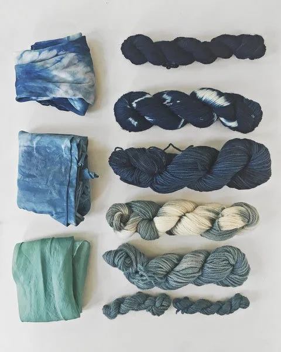
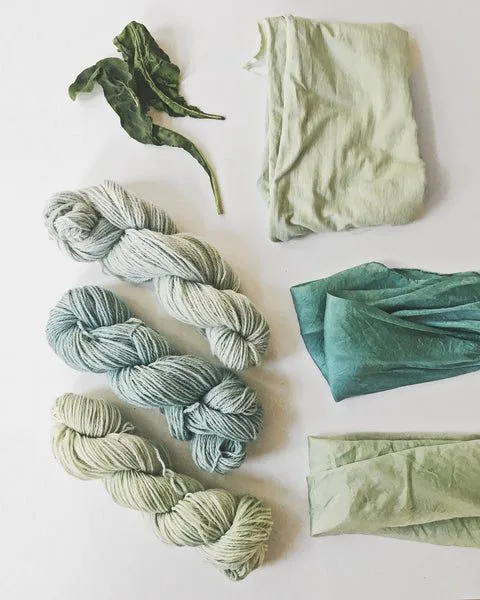

For my first short holiday this year, I chose to join a three-day workshop in the middle of nowhere (Harz, Germany, to be exact) to learn about making indigo vats and working with fresh woad. I'd experimented with simple 1-2-3 vats (organic vats) before, following Michel Garcia's recipes. Some of them worked and some didn't. I couldn't figure out my mistakes, so I decided to join Karin Tegeler this summer and ask her all my most burning questions.
What are vats?
For those who've never heard about dyeing with indigo, let me tell you a few words about what a vat is. The process of dyeing with woad is similar to dyeing with the indigo plant. The pigment contained in the leaves is not soluble in water, so to be dissolved it must undergo a chemical change — reduction. Once removed from the dye pot, it combines with oxygen in the air and reverts to the insoluble blue. This oxygen-free dye bath is called a vat. There are many recipes for making a vat (I read 19 in one weekend), but we tried out just the most common ones.
We started the course with a basic, non-eco-friendly vat, using synthetic indigo, ammonia, and hydrosulfide. Pigment extracted from the true indigo plant is never fully clear and always holds small residues of other pigments that the plant contains. In nature, plants never have only one pigment in them but a mix of many, which manifests in the final results. Buying pigments obtained from plants, you can never be entirely sure how much actual pigment is in there. For our first vat we used a clear pigment made in a laboratory, following the chemical structure of indigotin. The results pulled from this vat were very clear, pure navy blue.
They all looked too artificial for my taste, but if that's the color you like, pure synthetic indigo should be your choice. We also made an organic vat, using the same pigment, but with lime instead of ammonia and fructose instead of hydrosulfide. This vat needs much longer to reduce. Instead of one hour (ammonia and hydrosulfide), we waited two full days before we could use it. The results were very similar, though, and it's a recipe that's friendly for the environment and not toxic to people.
You can find many recipes for organic vats if you search for 1-2-3 vats online. When I first started experimenting with indigo and woad, I followed Maiwa's resources and I can only recommend them. You can make indigo organic vats using other ingredients instead of fructose too — henna, madder, dates, ripe fruit, and even iron. Making the latter, remember that high concentrations of iron can damage protein fibers.

Working with fresh woad
Later that weekend we attempted making the same vats using fresh woad leaves instead of synthetic indigo powder. Woad, unlike true indigo, doesn't contain indigotin but another substance — isatin — that develops into indigotin when exposed to oxygen. After cooking freshly cut leaves for just a few minutes and then aerating the isatin, we proceeded just like with the indigo pigment. For a 20-liter vat we used around 20 plants' worth of woad (it shrinks when cooked, so just enough to fill the pot). After cooking and straining the brown liquid, we cooled it down and exposed it to oxygen by pouring it between two buckets. When the dye cooled to just under 60°C, we proceeded with the same vat recipes we'd used when working with indigo.
These results were much different from the synthetic color. To me, they look more alive and natural, and even though they are less shiny and more grayish, I enjoy their subtle tones. You can see that the ammonia and hydrosulfide vat produced a slightly darker tone, but the organic fructose vat worked almost as well, without hurting the environment along the way.

Fresh leaves at home
On the last day of the course we were offered some of the home-grown woad leaves to take home, and I happily accepted. I'd read about The Dogwood Dyer's experiments with fresh indigo leaves and I was curious if I could replicate her beautiful results using woad. The same night I arrived home, I put a decent amount of fresh leaves in the blender, poured very cold water over them, and shredded them. I strained the leaves immediately and got a yellow-green liquid. I placed wool and silk fibers in it and waited for about five minutes. When I took them out, they were juicy green, but after two hours of drying outside they turned a nice pale blue (wool) and mermaid turquoise (silk). Many more fibers landed in the dye bath that night, producing some paler blues and sweet greens, until the liquid turned very dark and refused to color any more fabric. Now I'll have to test them for light fastness, but I'm already very excited about growing more woad next year.
Two days later I still had some cut woad leaves waiting in my fridge, so I repeated the fresh-leaves dye bath and it worked again. Once the dye bath is made, it only seems to work for a short amount of time before it turns dark and stops giving up color, but if you manage to keep the leaves fresh in your fridge, you can use them a few days later too.
The rest of the leaves landed in an organic fructose vat for my later pigment extraction experiments. You can't dry the leaves to use in winter, but you can make a vat and extract the pigment directly from it. The pigment can be dried and stored for later use. A third batch of leaves will spend the next few days fermenting in the sun before I can tell you if that works and makes any sense.
I'll keep you posted about my experiments. I'd love to know if you've ever dyed with fresh indigo or woad leaves (vat or a simple direct dye bath) and how it worked out. We can all learn from each other, and I'm very grateful for all the generous teachers who aren't afraid to share their knowledge.